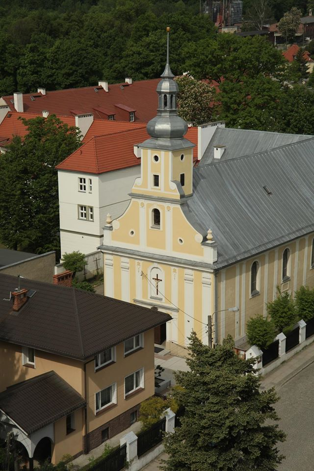

Kościół św. Dominika
W 1788 r. na obszarze przedmieścia wybudowano kościół katolicki dla dominikanów. Na przełomie XIX i XX wraz ze zniesieniem statusu miasta-twierdzy dokonuje się likwidacji murów miejskich i bram w Nysie czego efektem była rozbudowa miasta. Parafia św. Jakuba liczyła wówczas kilkadziesiąt tysięcy wiernych. W związku z tym władze diecezji wrocławskiej podjęły decyzję o wydzielenie z terytorium parafii św. Jakuba nowej parafii. Oficjalnie nowa parafia została erygowana w 1914 r. Podczas działań wojennych, prowadzonych na terenie Nysy, zabudowania parafialne uległy zupełnemu zniszczeniu, zaś kościół parafialny i filialny dewastacji. Po wojnie podjęto od razu odbudowę bazy parafialnej. W latach 1958-1962 trwały prace przy odbudowie, remoncie i rozbudowie kościoła oraz plebanii, w których udział brali lokalni parafianie.